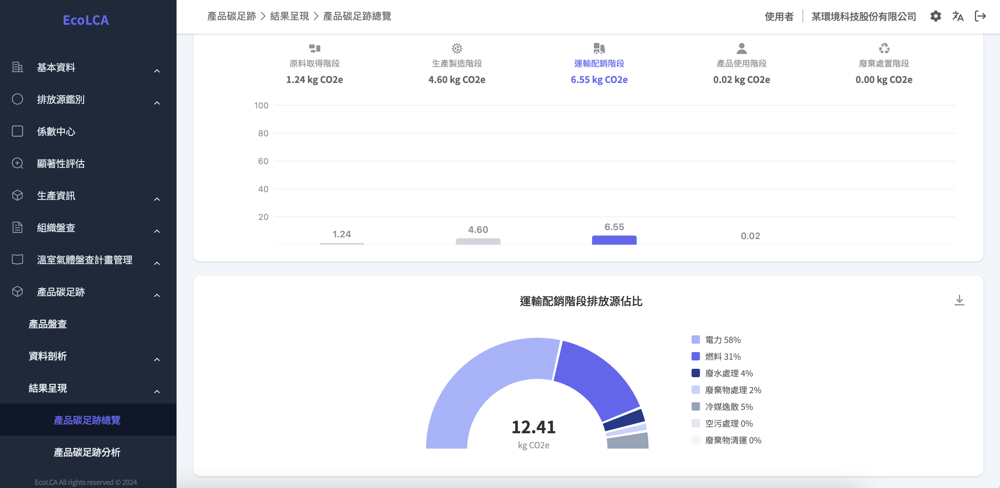
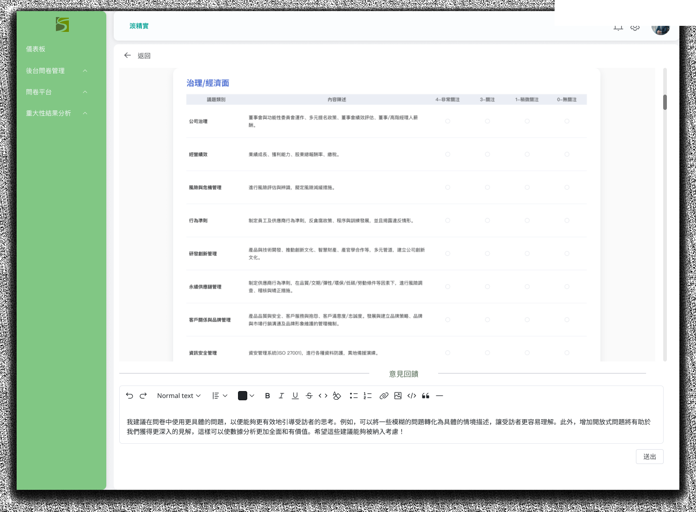
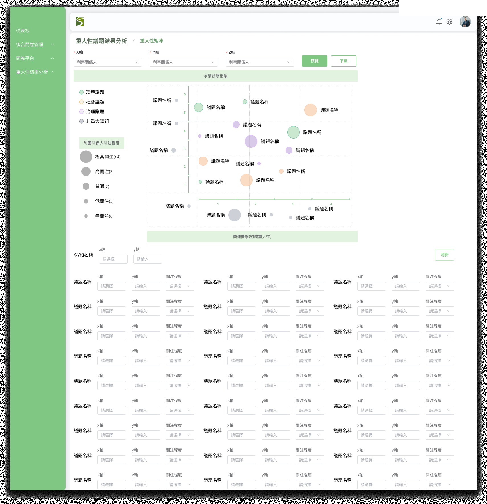

<title>Cindy Chung · Product Manager</title>
<meta name="viewport" content="width=device-width, initial-scale=1">
<style>
:root {
  --bg:      #FFFFFF;
  --bg2:     #F7F6F4;
  --bg3:     #EEECEA;
  --text:    #1C1B1E;
  --muted:   #6B6660;
  --faint:   #A09C98;
  --border:  rgba(28,27,30,0.09);
  --shadow:  0 2px 12px rgba(28,27,30,0.07);
  --shadow2: 0 8px 32px rgba(28,27,30,0.10);
  --amber:   #B86E3B;
  --amber-bg:#FBF3EC;
  --amber-bd:rgba(184,110,59,0.18);
  --green:   #3A845A;
  --green-bg:#EEF7F2;
  --green-bd:rgba(58,132,90,0.18);
  --blue:    #3B5BA8;
  --blue-bg: #EEF1FB;
  --blue-bd: rgba(59,91,168,0.18);

  --f: "Microsoft JHengHei","微軟正黑體","PingFang TC","蘋方-繁",sans-serif;
  --mono: "Courier New",Courier,monospace;
}

*,*::before,*::after{box-sizing:border-box;margin:0;padding:0;}
html{scroll-behavior:smooth;}
body{background:var(--bg);color:var(--text);font-family:var(--f);font-size:16px;line-height:1.7;overflow-x:hidden;font-style:normal;}
a{color:inherit;text-decoration:none;}
:focus-visible{outline:2px solid var(--amber);outline-offset:3px;border-radius:2px;}
@media(prefers-reduced-motion:reduce){*{transition-duration:.01ms!important;}}

/* NAV */
.nav{position:fixed;top:0;left:0;right:0;z-index:200;display:flex;justify-content:space-between;align-items:center;padding:1.125rem 3rem;background:rgba(255,255,255,0.92);backdrop-filter:blur(10px);border-bottom:1px solid var(--border);}
.nav-logo{font-weight:700;font-size:1rem;letter-spacing:.01em;}
.nav-links{display:flex;gap:2rem;}
.nav-link{font-size:.875rem;color:var(--muted);transition:color .15s;}
.nav-link:hover{color:var(--text);}

/* HERO */
.hero{min-height:100svh;display:flex;flex-direction:column;justify-content:center;padding:8rem 3rem 5rem;max-width:1100px;margin:0 auto;}
.hero-label{font-size:.8125rem;color:var(--muted);margin-bottom:1.25rem;letter-spacing:.01em;}
.hero-name{font-weight:700;font-size:clamp(4rem,10vw,8rem);line-height:.95;letter-spacing:-.025em;margin-bottom:1.75rem;}
.hero-name em{font-style:normal;color:var(--amber);}
.hero-desc{font-size:1.0625rem;color:var(--muted);max-width:440px;line-height:1.8;margin-bottom:3.5rem;}
.hero-projects{display:grid;grid-template-columns:1fr 1fr;gap:1rem;max-width:640px;}

/* PROJECT ENTRY CARDS */
.pcard{display:block;border:1px solid var(--border);border-radius:10px;padding:1.625rem;background:var(--bg);transition:box-shadow .2s,border-color .2s;}
.pcard:hover{box-shadow:var(--shadow2);border-color:rgba(28,27,30,.16);}
.pcard-num{font-size:.75rem;color:var(--faint);margin-bottom:.625rem;}
.pcard-title{font-weight:700;font-size:1.0625rem;margin-bottom:.25rem;}
.pcard-sub{font-size:.8125rem;color:var(--muted);margin-bottom:1rem;}
.pcard-arrow{font-size:.8125rem;font-weight:500;}
.pcard--carbon .pcard-title,.pcard--carbon .pcard-arrow{color:var(--amber);}
.pcard--mat .pcard-title,.pcard--mat .pcard-arrow{color:var(--green);}
.pcard--carbon{background:var(--amber-bg);border-color:var(--amber-bd);}
.pcard--mat{background:var(--green-bg);border-color:var(--green-bd);}

/* ABOUT */
.about{padding:6rem 3rem;background:var(--bg2);}
.about-inner{max-width:1100px;margin:0 auto;display:flex;flex-direction:column;gap:3rem;}
.section-label{font-size:.75rem;color:var(--faint);letter-spacing:.12em;text-transform:uppercase;margin-bottom:1.25rem;}
.about-title{font-weight:700;font-size:1.75rem;line-height:1.25;margin-bottom:1.25rem;}
.about-body{font-size:.9375rem;color:var(--muted);line-height:1.85;margin-bottom:1rem;max-width:680px;}
.about-body + .about-body{margin-top:.5rem;}
.cert-badge{display:inline-flex;align-items:center;gap:.5rem;margin-top:1.5rem;padding:.5rem .875rem;background:var(--bg);border:1px solid var(--border);border-radius:6px;font-size:.8125rem;color:var(--muted);}
.cert-icon{width:18px;height:18px;border-radius:3px;background:#4285F4;flex-shrink:0;}

/* STRENGTHS */
.strengths{display:grid;grid-template-columns:repeat(3,1fr);gap:1rem;}
.str-card{background:var(--bg);border:1px solid var(--border);border-radius:8px;padding:1.375rem;}
.str-num{font-size:.7rem;color:var(--faint);margin-bottom:.375rem;}
.str-title{font-weight:700;font-size:.9375rem;margin-bottom:.35rem;}
.str-body{font-size:.8125rem;color:var(--muted);line-height:1.7;}

/* WORK EXPERIENCE */
.we-list{display:flex;flex-direction:column;}
.we-item{display:grid;grid-template-columns:20px 1fr;gap:0 1.25rem;padding:1.5rem 0;}
.we-item+.we-item{border-top:1px solid var(--border);}
.we-marker{display:flex;flex-direction:column;align-items:center;padding-top:.3rem;}
.we-dot{width:10px;height:10px;border-radius:50%;flex-shrink:0;}
.we-dot--red{background:#C23939;}
.we-dot--amber{background:#C2893B;}
.we-dot--green{background:#3A845A;}
.we-vline{flex:1;width:1px;background:var(--border);margin-top:.5rem;}
.we-item:last-child .we-vline{display:none;}
.we-co{font-weight:700;font-size:.9375rem;display:block;}
.we-meta{display:flex;flex-wrap:wrap;align-items:center;gap:.25rem .5rem;margin-top:.2rem;}
.we-role{font-size:.8125rem;color:var(--muted);}
.we-sep{color:var(--faint);}
.we-date{font-size:.75rem;color:var(--faint);}
.we-focus{font-size:.8125rem;color:var(--text);line-height:1.65;margin-bottom:.75rem;border-left:2px solid var(--border);padding-left:.625rem;}
.we-bullets{list-style:none;padding:0;margin:0 0 .875rem;display:flex;flex-direction:column;gap:.4rem;}
.we-bullets li{font-size:.8125rem;color:var(--muted);line-height:1.65;padding-left:1.125rem;position:relative;}
.we-bullets li::before{content:'—';position:absolute;left:0;color:var(--faint);font-size:.75rem;top:.05em;}
.we-skills{display:flex;flex-wrap:wrap;gap:.3rem;}
.we-skill{font-size:.7rem;color:var(--faint);background:var(--bg3);padding:.2rem .55rem;border-radius:999px;letter-spacing:.01em;}

/* SECTION WRAPPER */
.cs{padding:5rem 3rem;}
.cs-inner{max-width:1100px;margin:0 auto;}
.cs--grey{background:var(--bg2);}
.cs--white{background:var(--bg);}

/* PROJ HERO */
.proj-hero{padding:7rem 3rem 4.5rem;}
.proj-hero--carbon{background:var(--amber-bg);}
.proj-hero--mat{background:var(--green-bg);}
.proj-hero-inner{max-width:1100px;margin:0 auto;}
.proj-tags{display:flex;flex-wrap:wrap;gap:.5rem;margin-bottom:1.75rem;}
.proj-tag{font-size:.75rem;padding:.3em .75em;border-radius:4px;border:1px solid;}
.proj-tag--carbon{border-color:var(--amber-bd);color:var(--amber);}
.proj-tag--mat{border-color:var(--green-bd);color:var(--green);}
.proj-title{font-weight:700;font-size:clamp(2.5rem,5.5vw,4.25rem);line-height:1.05;letter-spacing:-.02em;margin-bottom:.625rem;}
.proj-subtitle{font-size:1rem;color:var(--muted);margin-bottom:2.25rem;}
.proj-meta-row{display:flex;flex-wrap:wrap;gap:2.5rem;}
.meta-k{font-size:.7rem;color:var(--faint);text-transform:uppercase;letter-spacing:.1em;display:block;margin-bottom:.2rem;}
.meta-v{font-size:.875rem;color:var(--muted);}

/* CASE STUDY */
.cs-title{font-weight:700;font-size:1.5rem;line-height:1.25;margin-bottom:1rem;}
.cs-body{font-size:.9375rem;color:var(--muted);line-height:1.85;max-width:680px;}

/* OVERVIEW GRID */
.overview-grid{display:grid;grid-template-columns:1fr 1fr;gap:4rem;align-items:start;}
.fact-grid{display:grid;grid-template-columns:1fr 1fr;gap:.875rem;}
.fact-box{background:var(--bg);border:1px solid var(--border);border-radius:8px;padding:1.25rem;}
.fact-num{font-weight:700;font-size:2rem;line-height:1;margin-bottom:.25rem;}
.fact-num--amber{color:var(--amber);}
.fact-num--green{color:var(--green);}
.fact-desc{font-size:.8125rem;color:var(--muted);}

/* PAIN CARDS */
.pain-grid{display:grid;grid-template-columns:repeat(3,1fr);gap:1rem;margin-top:2rem;}
.pain-card{background:var(--bg);border:1px solid var(--border);border-radius:8px;padding:1.375rem;}
.pain-num{font-size:.7rem;color:var(--faint);margin-bottom:.5rem;display:block;}
.pain-head{font-weight:700;font-size:.9375rem;margin-bottom:.4rem;}
.pain-body{font-size:.8125rem;color:var(--muted);line-height:1.7;}

/* USER CARDS */
.user-grid{display:grid;grid-template-columns:repeat(3,1fr);gap:1rem;margin-top:1.75rem;}
.user-card{background:var(--bg);border:1px solid var(--border);border-radius:8px;padding:1.375rem;}
.user-role{font-weight:700;font-size:1rem;margin-bottom:.3rem;}
.user-desc{font-size:.8125rem;color:var(--muted);line-height:1.7;margin-bottom:.875rem;}
.user-pain-label{font-size:.7rem;color:var(--faint);text-transform:uppercase;letter-spacing:.08em;margin-bottom:.375rem;}
.user-pain{font-size:.8rem;color:var(--muted);line-height:1.65;}
.user-pain li{list-style:none;padding-left:.875rem;position:relative;}
.user-pain li::before{content:'·';position:absolute;left:0;}

/* IA / FLOW */
.ia-flow{display:flex;flex-direction:column;gap:0;margin-top:1.5rem;}
.ia-row{display:grid;gap:1rem;margin-bottom:.5rem;}
.ia-row--2{grid-template-columns:1fr 1fr;}
.ia-row--4{grid-template-columns:repeat(4,1fr);}
.ia-node{background:var(--bg);border:1px solid var(--border);border-radius:8px;padding:1.25rem;}
.ia-node--amber{border-color:var(--amber-bd);}
.ia-node--green{border-color:var(--green-bd);}
.ia-node-head{font-weight:700;font-size:.875rem;margin-bottom:.375rem;}
.ia-node-items{font-size:.75rem;color:var(--muted);line-height:1.65;}
.ia-node-items li{list-style:none;padding-left:.875rem;position:relative;}
.ia-node-items li::before{content:'–';position:absolute;left:0;color:var(--amber);}
.ia-node-items li.g::before{color:var(--green);}
.ia-arrow{text-align:center;color:var(--faint);font-size:.875rem;padding:.2rem 0;}
.ia-role-badge{display:inline-block;font-size:.625rem;letter-spacing:.08em;text-transform:uppercase;padding:.2em .6em;border-radius:3px;margin-top:.5rem;}
.ia-role-badge--a{background:var(--amber-bg);color:var(--amber);}
.ia-role-badge--g{background:var(--green-bg);color:var(--green);}

.uflow{display:flex;align-items:center;flex-wrap:wrap;gap:.5rem;margin-top:1.25rem;}
.uflow-step{background:var(--bg);border:1px solid var(--border);border-radius:4px;padding:.45rem .875rem;font-size:.8125rem;}
.uflow-arr{color:var(--faint);font-size:.875rem;}

/* PROCESS */
.process-sub{margin-bottom:3.5rem;}
.process-sub:last-child{margin-bottom:0;}
.process-title{font-weight:700;font-size:1.25rem;margin-bottom:.75rem;}
.process-body{font-size:.9375rem;color:var(--muted);line-height:1.85;max-width:680px;margin-bottom:1.5rem;}

/* STATUS GRID */
.status-grid{display:grid;grid-template-columns:repeat(4,1fr);gap:.75rem;margin-top:1rem;}
.status-box{background:var(--bg);border:1px solid var(--border);border-radius:6px;padding:1rem;}
.status-name{font-weight:600;font-size:.875rem;margin-bottom:.25rem;}
.status-desc{font-size:.75rem;color:var(--muted);line-height:1.5;}

/* COMPARE */
.compare-grid{display:grid;grid-template-columns:1fr 1fr;gap:1.5rem;margin-top:1rem;}
.compare-version{font-size:.75rem;color:var(--faint);text-align:center;margin-bottom:.5rem;}

/* SCREENS */
.screens-grid{display:flex;flex-direction:column;gap:3.5rem;}
.screen-wrap{display:grid;grid-template-columns:1fr 1fr;gap:3rem;align-items:start;}
.screen-info-title{font-weight:700;font-size:1rem;margin-bottom:.4rem;}
.screen-info-body{font-size:.8125rem;color:var(--muted);line-height:1.8;}
.screen-tag{font-size:.7rem;color:var(--faint);text-transform:uppercase;letter-spacing:.1em;margin-bottom:.625rem;display:block;}
.screen-tag--amber{color:var(--amber);}
.screen-tag--green{color:var(--green);}

/* HIGHLIGHT CARDS */
.highlight-grid{display:grid;grid-template-columns:repeat(3,1fr);gap:1rem;margin-top:2rem;}
.hl-card{background:var(--bg);border:1px solid var(--border);border-radius:8px;padding:1.5rem;}
.hl-num{font-size:.7rem;color:var(--faint);margin-bottom:.5rem;display:block;}
.hl-title{font-weight:700;font-size:.9375rem;margin-bottom:.5rem;}
.hl-body{font-size:.8125rem;color:var(--muted);line-height:1.7;}

/* CONTACT */
.contact{padding:7rem 3rem;background:var(--bg2);}
.contact-inner{max-width:700px;margin:0 auto;text-align:center;}
.contact-title{font-weight:700;font-size:clamp(2rem,4vw,3rem);line-height:1.15;margin-bottom:1rem;}
.contact-title span{color:var(--amber);}
.contact-p{font-size:.9375rem;color:var(--muted);line-height:1.85;margin-bottom:2.5rem;}
.contact-mail{font-size:1rem;font-weight:500;color:var(--text);border-bottom:2px solid var(--amber);padding-bottom:.1em;display:inline-block;transition:color .15s;}
.contact-mail:hover{color:var(--amber);}

footer{padding:1.5rem 3rem;border-top:1px solid var(--border);display:flex;justify-content:space-between;align-items:center;}
.ft{font-size:.75rem;color:var(--faint);}

/* BROWSER CHROME */
.browser{border-radius:10px;overflow:hidden;box-shadow:var(--shadow2);border:1px solid rgba(28,27,30,.08);}
.bbar{display:flex;align-items:center;gap:.5rem;padding:.625rem .875rem;}
.bbar-lt{background:#E8E7E5;}
.bbar-dk{background:#1E1D2C;}
.bdots{display:flex;gap:5px;}
.bdot{width:10px;height:10px;border-radius:50%;}
.bdot:nth-child(1){background:#FF5F57;}
.bdot:nth-child(2){background:#FEBC2E;}
.bdot:nth-child(3){background:#28C840;}
.burl{flex:1;height:18px;border-radius:3px;display:flex;align-items:center;padding:0 .5rem;font-family:var(--mono);font-size:.48rem;letter-spacing:.02em;overflow:hidden;white-space:nowrap;}
.burl-lt{background:rgba(0,0,0,.09);color:rgba(0,0,0,.3);}
.burl-dk{background:rgba(255,255,255,.07);color:rgba(255,255,255,.2);}
.bscreen{aspect-ratio:16/10;overflow:hidden;position:relative;}

/* ── MOCK SCREENS ────────────────────────────── */

/* Dark: 產品盤查總覽 */
.mc-ov{position:absolute;inset:0;background:#0F1B2D;display:flex;flex-direction:column;}
.mc-ov-top{height:32px;min-height:32px;background:#132030;display:flex;align-items:center;padding:0 .75rem;gap:.5rem;border-bottom:1px solid rgba(255,255,255,.05);flex-shrink:0;}
.mc-bc{font-size:.38rem;color:rgba(255,255,255,.35);}
.mc-bc span{color:rgba(255,255,255,.65);}
.mc-sp{flex:1;}
.mc-btn{height:17px;padding:0 .625rem;background:#B86E3B;border-radius:3px;font-size:.38rem;color:#fff;display:flex;align-items:center;}
.mc-body{flex:1;padding:.5rem .625rem;display:flex;flex-direction:column;gap:.35rem;overflow:hidden;}
.mc-filter-row{display:flex;gap:.375rem;}
.mc-dd{height:16px;background:#152030;border:1px solid rgba(255,255,255,.08);border-radius:3px;width:55px;font-size:.36rem;color:rgba(255,255,255,.25);display:flex;align-items:center;padding:0 .375rem;}
.mc-tbl{background:#142030;border-radius:4px;border:1px solid rgba(255,255,255,.05);overflow:hidden;}
.mc-tr{display:flex;align-items:center;gap:.35rem;padding:.25rem .45rem;border-bottom:1px solid rgba(255,255,255,.03);}
.mc-tr:last-child{border-bottom:none;}
.mc-tr.mc-th{background:rgba(255,255,255,.03);border-bottom:1px solid rgba(255,255,255,.05);}
.mc-cell{height:4px;border-radius:2px;background:rgba(255,255,255,.1);flex-shrink:0;}
.mc-badge{height:12px;border-radius:2px;display:flex;align-items:center;padding:0 .375rem;flex-shrink:0;}
.mc-badge span{font-size:.34rem;}
.mc-badge--blue{background:rgba(25,122,148,.5);}
.mc-badge--amber{background:rgba(184,110,59,.45);}
.mc-badge--green{background:rgba(58,132,90,.45);}
.mc-badge--grey{background:rgba(255,255,255,.1);}
.mc-link{width:20px;height:11px;background:rgba(184,110,59,.3);border-radius:2px;flex-shrink:0;}

/* Light: 生命週期 icon 欄 */
.mc-tbl-ui{position:absolute;inset:0;background:#F5F7FA;display:flex;flex-direction:column;padding:.3rem;}
.mc-tbl-hd{display:flex;align-items:center;padding:.25rem .4rem;gap:.375rem;flex-shrink:0;}
.mc-tbl-hc{font-size:.26rem;color:#9CA3AF;flex:1;}
.mc-tbl-row{display:flex;align-items:center;padding:.3rem .4rem;gap:.375rem;border-bottom:1px solid rgba(0,0,0,.04);background:#fff;border-radius:4px;margin-bottom:.2rem;}
.mc-tbl-cell{flex:1;height:7px;border-radius:2px;background:rgba(0,0,0,.07);}
.mc-lc-icons{display:flex;gap:.25rem;align-items:center;flex:1.8;}
.mc-lc-icon{width:10px;height:10px;border-radius:50%;border:1px solid #D1D5DB;background:#fff;flex-shrink:0;}
.mc-lc-icon.done{background:#3A845A;border-color:#3A845A;}
.mc-lc-icon.partial{background:var(--amber-bg);border-color:var(--amber);}
/* Light: Tab (DQR 評分) */
.mc-tabs-bar{display:flex;border-bottom:1px solid #E5E7EB;flex-shrink:0;background:#fff;}
.mc-tab{flex:1;height:26px;display:flex;align-items:center;justify-content:center;font-size:.36rem;color:#9CA3AF;border-bottom:2px solid transparent;}
.mc-tab.on{color:#B86E3B;border-bottom-color:#B86E3B;background:rgba(184,110,59,.06);}
.mc-tab-body{flex:1;padding:.5rem .625rem;display:flex;flex-direction:column;gap:.35rem;overflow:hidden;}

/* Light: DQR */
.mc-dqr{position:absolute;inset:0;background:#F5F7FA;display:flex;flex-direction:column;}
.mc-dqr-hd{height:26px;background:#fff;display:flex;align-items:center;padding:0 .625rem;border-bottom:1px solid #E5E7EB;flex-shrink:0;}
.mc-dqr-bc{font-size:.36rem;color:#9CA3AF;}
.mc-dqr-bd{flex:1;padding:.5rem;display:flex;flex-direction:column;gap:.375rem;overflow:hidden;}
.mc-dqr-grid{display:grid;grid-template-columns:90px repeat(5,1fr);gap:0;background:#fff;border-radius:4px;border:1px solid #E5E7EB;overflow:hidden;}
.mc-dqr-hc{height:16px;display:flex;align-items:center;justify-content:center;font-size:.32rem;color:#9CA3AF;border-bottom:1px solid #E5E7EB;}
.mc-dqr-hc.on{color:#B86E3B;}
.mc-dqr-rl{height:16px;display:flex;align-items:center;padding:0 .375rem;font-size:.32rem;color:#6B6660;border-bottom:1px solid #F3F4F6;background:#FAFAFA;}
.mc-dqr-cell{height:16px;display:flex;align-items:center;justify-content:center;border-bottom:1px solid #F3F4F6;}
.mc-dqr-dot{width:12px;height:8px;border-radius:2px;}
.mc-dqr-dot--hi{background:rgba(58,132,90,.55);}
.mc-dqr-dot--md{background:rgba(184,110,59,.45);}
.mc-dqr-dot--lo{background:#E5E7EB;}

/* Light: 顧問管理 */
.ml-con{position:absolute;inset:0;background:#fff;display:flex;flex-direction:column;}
.ml-hd{height:32px;background:#fff;border-bottom:2px solid #3A845A;display:flex;align-items:center;padding:0 .75rem;gap:.5rem;flex-shrink:0;}
.ml-logo{width:14px;height:14px;background:#3A845A;border-radius:2px;flex-shrink:0;}
.ml-hd-t{width:50px;height:5px;background:#1C1B1E;border-radius:2px;opacity:.3;}
.ml-sp{flex:1;}
.ml-hd-u{width:55px;height:9px;background:#ccc;border-radius:2px;}
.ml-body{flex:1;padding:.5rem .625rem;display:flex;flex-direction:column;gap:.35rem;overflow:hidden;background:#F7F6F4;}
.ml-st{font-size:.38rem;font-weight:600;color:#2D5A3D;padding:.15rem 0;}
.ml-tbl{background:#fff;border-radius:4px;border:1px solid #D8E8D8;overflow:hidden;}
.ml-tr{display:flex;align-items:center;gap:.35rem;padding:.22rem .45rem;border-bottom:1px solid #EEEEEE;}
.ml-tr:last-child{border-bottom:none;}
.ml-tr.hd{background:#F5FAF5;border-bottom:1px solid #D8E8D8;}
.ml-td{height:4px;border-radius:2px;background:#D4D4D4;flex-shrink:0;}
.ml-pill{height:11px;border-radius:8px;flex-shrink:0;}
.ml-pill--ok{width:32px;background:#E6F5EC;border:1px solid #BDDCBD;}
.ml-pill--exp{width:32px;background:#FFF0EC;border:1px solid #F7C0B0;}

/* Light: 問卷進度 */
.ml-qov{position:absolute;inset:0;background:#F7F6F4;display:flex;flex-direction:column;}
.ml-qov-hd{height:30px;background:#fff;border-bottom:2px solid #3A845A;display:flex;align-items:center;padding:0 .75rem;gap:.5rem;flex-shrink:0;}
.ml-qov-bd{flex:1;padding:.5rem .625rem;display:flex;flex-direction:column;gap:.35rem;overflow:hidden;}
.ml-qcard{background:#fff;border-radius:4px;border:1px solid #D8E8D8;padding:.375rem .5rem;}
.ml-qcard-hd{display:flex;align-items:center;gap:.35rem;margin-bottom:.25rem;}
.ml-qdot{width:7px;height:7px;border-radius:50%;flex-shrink:0;}
.ml-qdot--a{background:#B86E3B;}
.ml-qdot--b{background:#3A845A;}
.ml-qdot--c{background:#5B77BE;}
.ml-qtitle{width:65px;height:4px;background:#333;border-radius:2px;opacity:.45;}
.ml-qsp{flex:1;}
.ml-qbadge{height:10px;width:28px;border-radius:2px;background:#E6F5EC;}
.ml-prog-row{display:flex;align-items:center;gap:.375rem;}
.ml-prog-lbl{width:32px;height:4px;background:#ccc;border-radius:2px;flex-shrink:0;}
.ml-prog-track{flex:1;height:4px;background:#D8E8D8;border-radius:3px;overflow:hidden;}
.ml-prog-fill{height:100%;background:#3A845A;border-radius:3px;}
.ml-prog-num{font-size:.32rem;color:#6B6660;white-space:nowrap;flex-shrink:0;width:26px;}

/* Light: 重大性矩陣 */
.ml-mtx{position:absolute;inset:0;background:#fff;display:flex;flex-direction:column;}
.ml-mtx-hd{height:28px;background:#fff;border-bottom:1px solid #E0E8E0;display:flex;align-items:center;padding:0 .75rem;gap:.5rem;flex-shrink:0;}
.ml-mtx-bd{flex:1;padding:.5rem;display:flex;gap:.5rem;overflow:hidden;}
.ml-mtx-plot{flex:1;position:relative;border:1px solid #D8E8D8;border-radius:4px;background:#FAFCFA;}
.ml-mtx-xl{position:absolute;bottom:.2rem;left:50%;transform:translateX(-50%);font-size:.3rem;color:#6B6660;}
.ml-mtx-yl{position:absolute;left:.2rem;top:50%;transform:translateY(-50%) rotate(-90deg);font-size:.3rem;color:#6B6660;white-space:nowrap;}
.ml-mtx-q{position:absolute;top:0;right:0;width:50%;height:50%;background:rgba(58,132,90,.06);border-left:1px dashed rgba(58,132,90,.3);border-bottom:1px dashed rgba(58,132,90,.3);}
.ml-dot{position:absolute;border-radius:50%;transform:translate(-50%,50%);}
.ml-dot--hi{width:10px;height:10px;background:#B86E3B;}
.ml-dot--md{width:8px;height:8px;background:#3A845A;}
.ml-dot--lo{width:6px;height:6px;background:#5B77BE;}
.ml-mtx-leg{width:75px;display:flex;flex-direction:column;gap:.35rem;justify-content:center;}
.ml-leg-item{display:flex;align-items:center;gap:.3rem;}
.ml-leg-dot{border-radius:50%;flex-shrink:0;}
.ml-leg-txt{font-size:.3rem;color:#6B6660;line-height:1.3;}

/* RESPONSIVE */
@media(max-width:900px){
  .nav{padding:1rem 1.5rem;}
  .hero,.about,.cs,.proj-hero,.contact{padding-left:1.5rem;padding-right:1.5rem;}
  .hero-projects,.overview-grid,.pain-grid,.user-grid,.ia-row--2,.ia-row--4,.compare-grid,.status-grid,.highlight-grid,.screen-wrap,.strengths{grid-template-columns:1fr;}
  .shots-3col{grid-template-columns:1fr !important;}
  .contact-inner{text-align:left;}
  footer{padding:1.25rem 1.5rem;flex-direction:column;gap:.3rem;align-items:flex-start;}
}
</style>

<!-- NAV -->
<nav class="nav">
  <a href="#home" class="nav-logo">Cindy Chung</a>
  <div class="nav-links">
    <a href="#about" class="nav-link">關於我</a>
    <a href="#carbon" class="nav-link">碳足跡方案</a>
    <a href="#materiality" class="nav-link">重大性平台</a>
    <a href="#contact" class="nav-link">聯絡</a>
  </div>
</nav>

<!-- HERO -->
<section id="home">
  <div class="hero">
    <p class="hero-label">Product Manager · B2B SaaS</p>
    <h1 class="hero-name">Cindy<br><em>Chung</em></h1>
    <p class="hero-desc">把複雜的 B2B 需求，轉化成真正能解決問題的產品。<br>這兩年我從 0 到 1 打造了兩套 ESG 平台。</p>
    <div class="hero-projects">
      <a href="#carbon" class="pcard pcard--carbon">
        <p class="pcard-num">01</p>
        <p class="pcard-title">產品碳足跡方案</p>
        <p class="pcard-sub">企業碳盤查 SaaS · 2024–2025</p>
        <p class="pcard-arrow">查看案例 →</p>
      </a>
      <a href="#materiality" class="pcard pcard--mat">
        <p class="pcard-num">02</p>
        <p class="pcard-title">重大性評估平台</p>
        <p class="pcard-sub">從 0 到 1 · 2025–2026</p>
        <p class="pcard-arrow">查看案例 →</p>
      </a>
    </div>
    </div>
  </div>
</section>

<!-- ABOUT -->
<section id="about">
  <div class="about">
    <div class="about-inner">
      <div>
        <p class="section-label">關於我</p>
        <h2 class="about-title">從人資到 PM，<br>做過設計、走到 B2B SaaS</h2>
        <p class="about-body">我的第一份工作是人資。每天最重要的事是搞清楚對方「說的是什麼」和「真正需要的是什麼」——這兩件事往往不一樣，PM 工作也是。</p>
        <p class="about-body">做設計做到一個階段，開始感覺到一個限制：設計完交付出去，就沒有下文了。使用者真的解決問題了嗎？功能上線後是否被正確理解？這些問題我跟不到。我想要更完整地參與一個產品——從定義問題、決定做什麼不做什麼，到看到落地之後的樣子，而不只是負責其中一個環節。</p>
        <p class="about-body">帶著這個想法進入現在這家公司，開始負責 B2B SaaS 的產品工作。設計的背景讓我在定義需求時能快速掌握使用者流程；PM 的角色讓我開始真正理解在使用者需求、業務目標、技術可行性之間做取捨是什麼意思。這兩年做的兩個 ESG 系統都極度複雜，但我逐漸習慣的節奏是先把問題框架定清楚，再決定做什麼、不做什麼，推動執行。</p>
        <div class="cert-badge"><div class="cert-icon"></div>Google UX Design Certificate</div>
      </div>
      <div>
        <p class="section-label">核心特質</p>
        <div class="strengths">
          <div class="str-card">
            <p class="str-num">01</p>
            <p class="str-title">找到真正的需求</p>
            <p class="str-body">人資背景讓我習慣在訪談裡觀察言語以外的東西。使用者說「我要這個功能」的時候，通常代表有更底層的問題還沒說出口。</p>
          </div>
          <div class="str-card">
            <p class="str-num">02</p>
            <p class="str-title">快速建立 domain 知識</p>
            <p class="str-body">從 ESG 法規到碳計算方法學，做產品之前不得不先搞懂這些。不懂 domain 就很難判斷哪些需求是真問題，也無法和工程師有效溝通技術取捨。</p>
          </div>
          <div class="str-card">
            <p class="str-num">03</p>
            <p class="str-title">在模糊中做出清楚的決策</p>
            <p class="str-body">B2B SaaS 的需求常常模糊且互相衝突。喜歡花時間把問題框架定清楚，讓後續的優先排序和取捨決策有依據可循。</p>
          </div>
        </div>
      </div>
      <div>
        <p class="section-label">專業經歷</p>
        <div class="we-list">

          <!-- 快思 -->
          <div class="we-item">
            <div class="we-marker">
              <div class="we-dot we-dot--red"></div>
              <div class="we-vline"></div>
            </div>
            <div>
              <span class="we-co">快思股份有限公司</span>
              <div class="we-meta">
                <span class="we-role">UI/UX 設計師</span>
                <span class="we-sep">·</span>
                <span class="we-date">2024.04 – 現在 · 台中西屯</span>
              </div>
              <p class="we-focus" style="margin-top:.75rem;">負責 Enterprise 級別 ESG SaaS 平台核心模組的產品規劃與流程定義，擅長將複雜法規與企業實務痛點，轉化為具落地性的功能規格。</p>
              <ul class="we-bullets">
                <li><strong>B2B 產品規劃與規格定義</strong> 獨立主導溫室氣體盤查、產品碳足跡、重大性評估問卷等核心模組的 IA 與高擬真原型設計，並負責撰寫 PRD。</li>
                <li><strong>企業需求分析</strong> 直接對接企業客戶進行需求訪談，解析製造業在數位轉型與碳管理上的實務痛點，轉化為標準化、模組化的系統設計。</li>
                <li><strong>AI 整合開發</strong> 熟練運用 Claude Code 進行設計交付與前端部署協作（Prototyping），大幅降低與研發團隊的溝通成本。</li>
                <li><strong>品牌視覺建立</strong> 兼任公司平面文宣與展場核心視覺設計，確保品牌在數位產品與實體活動的一致性。</li>
              </ul>
              <div class="we-skills">
                <span class="we-skill">B2B SaaS 規劃</span>
                <span class="we-skill">ESG & 智慧製造</span>
                <span class="we-skill">PRD 撰寫</span>
                <span class="we-skill">AI-Integrated Dev</span>
                <span class="we-skill">Figma</span>
              </div>
            </div>
          </div>

          <!-- 天方 -->
          <div class="we-item">
            <div class="we-marker">
              <div class="we-dot we-dot--amber"></div>
              <div class="we-vline"></div>
            </div>
            <div>
              <span class="we-co">天方科技實業股份有限公司</span>
              <div class="we-meta">
                <span class="we-role">UI 設計師</span>
                <span class="we-sep">·</span>
                <span class="we-date">2023.10 – 2024.03 · 6 個月 · 台中南屯</span>
              </div>
              <p class="we-focus" style="margin-top:.75rem;">負責大型校務行政系統的體驗優化，具備處理多欄位、複雜權限與大規模數據連動系統的架構規劃能力。</p>
              <ul class="we-bullets">
                <li><strong>複雜系統規劃</strong> 主導校務專案「AI 選課系統」及各類行政系統的介面設計與使用者體驗流程優化，梳理龐大資訊流量。</li>
                <li><strong>系統導入文件</strong> 獨立製作詳盡的系統操作手冊、規格簡報與說明文件，協助企業客戶與內部同仁理解系統邏輯，加速產品上線進度。</li>
              </ul>
              <div class="we-skills">
                <span class="we-skill">大型後台 IA</span>
                <span class="we-skill">AI 應用系統設計</span>
                <span class="we-skill">系統導入手冊</span>
                <span class="we-skill">Figma</span>
              </div>
            </div>
          </div>

          <!-- 澔心 -->
          <div class="we-item">
            <div class="we-marker">
              <div class="we-dot we-dot--green"></div>
              <div class="we-vline"></div>
            </div>
            <div>
              <span class="we-co">澔心科技股份有限公司</span>
              <div class="we-meta">
                <span class="we-role">UI/UX 設計師</span>
                <span class="we-sep">·</span>
                <span class="we-date">2022.08 – 2023.03 · 8 個月 · 新竹</span>
              </div>
              <p class="we-focus" style="margin-top:.75rem;">由設計行銷助理快速晉升正職，負責 B2C 智慧硬體 App 的體驗優化與市場行銷驗證。</p>
              <ul class="we-bullets">
                <li><strong>產品體驗流程優化</strong> 負責寶寶智慧照護產品 APP 介面設計與全鏈路使用者體驗改善，優化核心操作流程。</li>
                <li><strong>跨域行銷與視覺操刀</strong> 兼任官方網站設計、Facebook 社群行銷圖文發想與 Banner 製作，將產品亮點轉化為市場行銷語言。</li>
              </ul>
              <div class="we-skills">
                <span class="we-skill">B2C 行銷與產品結合</span>
                <span class="we-skill">APP 介面優化</span>
                <span class="we-skill">MVP 市場驗證</span>
                <span class="we-skill">Adobe Suite</span>
              </div>
            </div>
          </div>

        </div>
      </div>
    </div>
  </div>
</section>

<!-- ══ PROJECT 1: 產品碳足跡方案 ══ -->
<section id="carbon">

  <div class="proj-hero proj-hero--carbon">
    <div class="proj-hero-inner">
      <div class="proj-tags">
        <span class="proj-tag proj-tag--carbon">產品碳足跡</span>
        <span class="proj-tag proj-tag--carbon">B2B SaaS</span>
        <span class="proj-tag proj-tag--carbon">2024–2025</span>
      </div>
      <h2 class="proj-title">產品碳足跡方案</h2>
      <p class="proj-subtitle">企業碳盤查 SaaS · 需求定義與產品規劃</p>
      <div class="proj-meta-row">
        <div><span class="meta-k">角色</span><span class="meta-v">Lead UIUX Designer</span></div>
        <div><span class="meta-k">平台</span><span class="meta-v">企業碳盤查 SaaS</span></div>
        <div><span class="meta-k">時程</span><span class="meta-v">2024–2025</span></div>
      </div>
    </div>
  </div>

  <!-- 01 專案概覽 -->
  <div class="cs cs--white">
    <div class="cs-inner">
      <p class="section-label">01 · 專案概覽</p>
      <div class="overview-grid">
        <div>
          <h3 class="cs-title">讓製造業能追蹤到每一款產品的碳排放</h3>
          <p class="cs-body">一套給製造業用的碳足跡計算工具。企業需要追蹤每一款產品從生產到報廢的全程碳排放，填報到政府或客戶要求的格式裡。我負責這個模組從無到有的完整設計，包含資訊架構、使用者流程，以及數據品質評估功能的 v1 到 v2 迭代。</p>
        </div>
        <div class="fact-grid">
          <div class="fact-box"><div class="fact-num fact-num--amber">2</div><div class="fact-desc">功能版本迭代</div></div>
          <div class="fact-box"><div class="fact-num fact-num--amber">5</div><div class="fact-desc">生命週期階段</div></div>
          <div class="fact-box"><div class="fact-num fact-num--amber">6</div><div class="fact-desc">產品盤查狀態</div></div>
          <div class="fact-box"><div class="fact-num fact-num--amber">v2</div><div class="fact-desc">數據品質功能迭代</div></div>
        </div>
      </div>
    </div>
  </div>

  <!-- 02 問題背景 -->
  <div class="cs cs--grey">
    <div class="cs-inner">
      <p class="section-label">02 · 問題背景</p>
      <h3 class="cs-title">組織層級的碳盤查已不夠用</h3>
      <p class="cs-body">傳統上，企業只做整體組織的碳盤查。但隨著供應鏈碳揭露要求升級，製造商必須精確計算到每一款產品的碳足跡，分階段追蹤從原料到廢棄的每一個環節。這個需求帶來了三個核心設計挑戰：</p>
      <div class="pain-grid">
        <div class="pain-card">
          <span class="pain-num">痛點 01</span>
          <p class="pain-head">資料分散</p>
          <p class="pain-body">碳排放數據跨越不同部門、不同格式，原料採購、生產工序、運輸數據沒有統一的填報入口，難以整合。</p>
        </div>
        <div class="pain-card">
          <span class="pain-num">痛點 02</span>
          <p class="pain-head">流程複雜</p>
          <p class="pain-body">產品碳足跡的計算規範要求追蹤五個生命週期階段，每個階段的資料欄位和計算邏輯都不同，使用者難以掌握整體流程。</p>
        </div>
        <div class="pain-card">
          <span class="pain-num">痛點 03</span>
          <p class="pain-head">品質不透明</p>
          <p class="pain-body">使用者填完數據後無法判斷數據品質是否足夠，對最終計算結果的可信度沒有把握，難以對外揭露。</p>
        </div>
      </div>
    </div>
  </div>

  <!-- 03 使用者分析 -->
  <div class="cs cs--white">
    <div class="cs-inner">
      <p class="section-label">03 · 使用者分析</p>
      <h3 class="cs-title">三種使用者，三種需求</h3>
      <div class="user-grid">
        <div class="user-card">
          <p class="user-role">CSR 專員</p>
          <p class="user-desc">主要操作者。負責填報碳足跡數據，但通常不具備深厚的碳計算背景，需要系統引導完成整個流程。</p>
          <p class="user-pain-label">主要痛點</p>
          <ul class="user-pain">
            <li>不確定每個階段要填什麼</li>
            <li>不知道數據填錯或填漏了</li>
            <li>面對技術術語容易焦慮</li>
          </ul>
        </div>
        <div class="user-card">
          <p class="user-role">產品工程師</p>
          <p class="user-desc">提供工序、用料數據。對 ESG 系統不熟悉，只需要填入工程數據，不需要理解整個流程。</p>
          <p class="user-pain-label">主要痛點</p>
          <ul class="user-pain">
            <li>工序數據格式與系統不符</li>
            <li>不清楚為什麼需要這些資訊</li>
            <li>重複輸入相似產品的數據</li>
          </ul>
        </div>
        <div class="user-card">
          <p class="user-role">管理層</p>
          <p class="user-desc">查看最終報告，做決策。需要清楚知道哪個產品排放最高、整體達標狀況如何。</p>
          <p class="user-pain-label">主要痛點</p>
          <ul class="user-pain">
            <li>看不懂技術性的數字</li>
            <li>無法快速抓到最需要改善的項目</li>
            <li>報告格式不符合對外揭露需求</li>
          </ul>
        </div>
      </div>
    </div>
  </div>

  <!-- 04 系統架構 -->
  <div class="cs cs--grey">
    <div class="cs-inner">
      <p class="section-label">04 · 系統架構</p>
      <h3 class="cs-title">產品範疇與三大模組</h3>
      <p class="cs-body">在正式開始定義功能之前，我先釐清了這個產品需要解決哪三個層次的問題，再決定哪些在這個版本內、哪些放到之後。</p>
      <div class="ia-flow">
        <div class="ia-row ia-row--2">
          <div class="ia-node ia-node--amber">
            <p class="ia-node-head">生產資訊管理</p>
            <p class="ia-node-items" style="list-style:none;padding:0;">讓企業建立產品型號與工序用料的基礎資料。這是計算的前提，但不是使用者最常操作的地方，設計重點是「設定一次、反覆複用」。</p>
          </div>
          <div class="ia-node ia-node--amber">
            <p class="ia-node-head">結果呈現與報告</p>
            <p class="ia-node-items" style="list-style:none;padding:0;">給管理層看的輸出面。我決定這個版本先做清冊與報告書，讓揭露需求先滿足，進階分析功能放後續迭代。</p>
          </div>
        </div>
        <div class="ia-arrow">↓ 核心模組</div>
        <div class="ia-node ia-node--amber" style="background:var(--amber-bg);">
          <p class="ia-node-head">產品碳足跡盤查（核心）</p>
          <p class="ia-node-items" style="list-style:none;padding:0;">整個產品最複雜的部分。包含狀態管理、五階段資料填寫流程、數據品質評估，以及計算後的凍結確認機制。這個模組的需求定義花了最多時間，也是迭代最頻繁的地方。</p>
        </div>
      </div>
      <div style="margin-top:1.75rem;">
        <p class="section-label" style="margin-bottom:.75rem;">使用者主要操作流程</p>
        <div class="uflow">
          <div class="uflow-step">設定產品資訊</div><div class="uflow-arr">→</div>
          <div class="uflow-step">建立工序用料</div><div class="uflow-arr">→</div>
          <div class="uflow-step">新增產品盤查</div><div class="uflow-arr">→</div>
          <div class="uflow-step">選擇生命週期</div><div class="uflow-arr">→</div>
          <div class="uflow-step">填寫各階段數據</div><div class="uflow-arr">→</div>
          <div class="uflow-step">設定數據品質</div><div class="uflow-arr">→</div>
          <div class="uflow-step" style="background:var(--amber-bg);border-color:var(--amber-bd);">計算 &amp; 凍結結果</div>
        </div>
      </div>
    </div>
  </div>

  <!-- 05 設計過程 -->
  <div class="cs cs--white">
    <div class="cs-inner">
      <p class="section-label">05 · 產品過程</p>
      <p class="cs-body" style="margin-bottom:2.5rem;">開始做這個產品之前，我得先搞清楚「產品碳足跡計算」是什麼。第一次和使用者訪談，對方提到碳係數、排放源分類、生命週期邊界，我一個都聽不懂。花了幾週補完背景知識，才在下一次訪談時真正聽懂使用者卡在哪裡——哪些流程複雜是法規必要的，哪些只是系統長期累積的歷史包袱。這個過程讓我改了好幾次訪談問題，也推翻了幾個最初的需求假設，重新定義了產品範疇。</p>

      <div class="process-sub">
        <h3 class="process-title">A. 核心流程設計：五個入口的定點導覽</h3>
        <p class="process-body">計算規範要求分別追蹤五個階段：原料取得、生產製造、運輸配銷、產品使用、廢棄處置。每個階段欄位不同，對應的填寫量差距也大。不強迫使用者走線性流程——在產品盤查總覽頁的「生命週期」欄位直接放置五個可點擊的 icon，點哪個 icon 直接進哪個階段的維護頁面。這個設計讓使用者回頭補填或修改某一階段時，不需要重新走完整個流程；同時一眼就能在總覽頁看出哪些階段還沒填，哪些已完成。</p>
        <div class="browser">
          <div class="bbar bbar-lt">
            <div class="bdots"><div class="bdot"></div><div class="bdot"></div><div class="bdot"></div></div>
            <div class="burl burl-lt">carbon-footprint.app / 產品碳足跡 / 產品盤查</div>
          </div>
          <div class="bscreen">
            <div class="mc-tbl-ui">
              <div class="mc-tbl-hd">
                <div class="mc-tbl-hc" style="flex:.6;">狀態</div>
                <div class="mc-tbl-hc">產品名稱</div>
                <div class="mc-tbl-hc mc-tbl-hc--lc" style="flex:1.8;">生命週期</div>
                <div class="mc-tbl-hc" style="flex:.5;">功能</div>
              </div>
              <div class="mc-tbl-row">
                <div style="flex:.6;height:9px;border-radius:3px;background:rgba(184,110,59,.35);"></div>
                <div class="mc-tbl-cell"></div>
                <div class="mc-lc-icons">
                  <div class="mc-lc-icon done"></div>
                  <div class="mc-lc-icon done"></div>
                  <div class="mc-lc-icon partial"></div>
                  <div class="mc-lc-icon"></div>
                  <div class="mc-lc-icon"></div>
                </div>
                <div class="mc-tbl-cell" style="flex:.5;"></div>
              </div>
              <div class="mc-tbl-row">
                <div style="flex:.6;height:9px;border-radius:3px;background:rgba(58,132,90,.3);"></div>
                <div class="mc-tbl-cell"></div>
                <div class="mc-lc-icons">
                  <div class="mc-lc-icon done"></div>
                  <div class="mc-lc-icon done"></div>
                  <div class="mc-lc-icon done"></div>
                  <div class="mc-lc-icon done"></div>
                  <div class="mc-lc-icon done"></div>
                </div>
                <div class="mc-tbl-cell" style="flex:.5;"></div>
              </div>
              <div class="mc-tbl-row">
                <div style="flex:.6;height:9px;border-radius:3px;background:rgba(0,0,0,.08);"></div>
                <div class="mc-tbl-cell"></div>
                <div class="mc-lc-icons">
                  <div class="mc-lc-icon done"></div>
                  <div class="mc-lc-icon"></div>
                  <div class="mc-lc-icon"></div>
                  <div class="mc-lc-icon"></div>
                  <div class="mc-lc-icon"></div>
                </div>
                <div class="mc-tbl-cell" style="flex:.5;"></div>
              </div>
            </div>
          </div>
        </div>
      </div>

      <div class="process-sub">
        <h3 class="process-title">B. 狀態系統決策：六種盤查狀態的優先排序邏輯</h3>
        <p class="process-body">使用者需要在總覽頁快速判斷哪些產品需要優先處理。我定義了六種狀態並設計對應的顏色——橘色是尚未設定完成，紅色是設定需更新，綠色是設定完成（可計算），藍色是計算完成，灰色是已凍結，另有「請聯絡快思」做特殊狀態處理。狀態系統讓使用者不需要逐一點開才能判斷優先順序。</p>
        <div class="status-grid" style="grid-template-columns:repeat(3,1fr);">
          <div class="status-box" style="background:var(--amber-bg);border-color:var(--amber-bd);"><p class="status-name" style="color:var(--amber);">尚未設定完成</p><p class="status-desc">生命週期設定尚未完成，無法計算</p></div>
          <div class="status-box" style="background:#FDF2F2;border-color:rgba(180,40,40,.18);"><p class="status-name" style="color:#B42222;">設定需更新</p><p class="status-desc">上游資料有變動，需重新匯入更新</p></div>
          <div class="status-box" style="background:var(--green-bg);border-color:var(--green-bd);"><p class="status-name" style="color:var(--green);">設定完成</p><p class="status-desc">生命週期皆設定完成，可進行計算</p></div>
          <div class="status-box" style="background:#EEF4FB;border-color:rgba(25,100,160,.18);"><p class="status-name" style="color:#1964A0;">計算完成</p><p class="status-desc">已計算完成，可查清冊；需凍結才能查看圖表</p></div>
          <div class="status-box"><p class="status-name" style="color:var(--muted);">已凍結</p><p class="status-desc">該年度資料已確認凍結，數據鎖定</p></div>
          <div class="status-box" style="background:#FDF2F2;border-color:rgba(180,40,40,.18);"><p class="status-name" style="color:#B42222;">請聯絡快思</p><p class="status-desc">遇到異常狀況，需聯繫客服協助</p></div>
        </div>
      </div>

      <div class="process-sub">
        <h3 class="process-title">C. 數據品質評估：v1 → v2 迭代</h3>
        <p class="process-body">v1 版本是獨立頁面，使用者需從總覽頁另外跳轉才能評分，問題是進入後看不到原始填寫的數據，難以判斷要給幾分。v2 版本將數據品質評分（DQR）整合進各階段的填報頁面，每筆排放源資料旁都有獨立的設定入口，填完數據後就能在同一頁評估；另新增「快速設定」功能，可批次套用同類別的未設定資料——不需要再跳頁，也不需要逐筆重複操作。</p>
        <div class="compare-grid">
          <div>
            <p class="compare-version">v1 — 獨立頁面（問題版本）</p>
            <div class="browser">
              <div class="bbar bbar-lt">
                <div class="bdots"><div class="bdot"></div><div class="bdot"></div><div class="bdot"></div></div>
                <div class="burl burl-lt">…/ 數據品質設定（舊）</div>
              </div>
              <div class="bscreen">
                <div class="mc-dqr">
                  <div class="mc-dqr-hd"><span class="mc-dqr-bc">產品碳足跡 / 數據品質設定</span></div>
                  <div class="mc-dqr-bd">
                    <div class="mc-dqr-grid">
                      <div class="mc-dqr-hc" style="border-right:1px solid #E5E7EB;">評分項目</div>
                      <div class="mc-dqr-hc">原料</div><div class="mc-dqr-hc">生產</div><div class="mc-dqr-hc">運輸</div><div class="mc-dqr-hc">使用</div><div class="mc-dqr-hc">廢棄</div>
                      <div class="mc-dqr-rl" style="border-right:1px solid #E5E7EB;">活動數據</div>
                      <div class="mc-dqr-cell"><div class="mc-dqr-dot mc-dqr-dot--lo"></div></div>
                      <div class="mc-dqr-cell"><div class="mc-dqr-dot mc-dqr-dot--lo"></div></div>
                      <div class="mc-dqr-cell"><div class="mc-dqr-dot mc-dqr-dot--lo"></div></div>
                      <div class="mc-dqr-cell"><div class="mc-dqr-dot mc-dqr-dot--lo"></div></div>
                      <div class="mc-dqr-cell"><div class="mc-dqr-dot mc-dqr-dot--lo"></div></div>
                      <div class="mc-dqr-rl" style="border-right:1px solid #E5E7EB;">完整性</div>
                      <div class="mc-dqr-cell"><div class="mc-dqr-dot mc-dqr-dot--lo"></div></div>
                      <div class="mc-dqr-cell"><div class="mc-dqr-dot mc-dqr-dot--lo"></div></div>
                      <div class="mc-dqr-cell"><div class="mc-dqr-dot mc-dqr-dot--lo"></div></div>
                      <div class="mc-dqr-cell"><div class="mc-dqr-dot mc-dqr-dot--lo"></div></div>
                      <div class="mc-dqr-cell"><div class="mc-dqr-dot mc-dqr-dot--lo"></div></div>
                    </div>
                    <p style="font-size:.34rem;color:#9CA3AF;text-align:center;padding-top:.5rem;">無法對照已填數據，評分困難</p>
                  </div>
                </div>
              </div>
            </div>
          </div>
          <div>
            <p class="compare-version">v2 — 整合設計（改善後）</p>
            <div class="browser">
              <div class="bbar bbar-lt">
                <div class="bdots"><div class="bdot"></div><div class="bdot"></div><div class="bdot"></div></div>
                <div class="burl burl-lt">…/ 產品盤查 / 數據品質設定</div>
              </div>
              <div class="bscreen">
                <div class="mc-dqr">
                  <div class="mc-dqr-hd"><span class="mc-dqr-bc">產品碳足跡 / 產品盤查 / <span style="color:#B86E3B;">數據品質設定</span></span></div>
                  <div class="mc-dqr-bd">
                    <div class="mc-dqr-grid">
                      <div class="mc-dqr-hc" style="border-right:1px solid #E5E7EB;">排放源</div>
                      <div class="mc-dqr-hc on">活動數據</div><div class="mc-dqr-hc">完整性</div><div class="mc-dqr-hc">可靠度</div><div class="mc-dqr-hc">時間性</div><div class="mc-dqr-hc">地理性</div>
                      <div class="mc-dqr-rl" style="border-right:1px solid #E5E7EB;">原料 A</div>
                      <div class="mc-dqr-cell"><div class="mc-dqr-dot mc-dqr-dot--hi"></div></div>
                      <div class="mc-dqr-cell"><div class="mc-dqr-dot mc-dqr-dot--hi"></div></div>
                      <div class="mc-dqr-cell"><div class="mc-dqr-dot mc-dqr-dot--md"></div></div>
                      <div class="mc-dqr-cell"><div class="mc-dqr-dot mc-dqr-dot--hi"></div></div>
                      <div class="mc-dqr-cell"><div class="mc-dqr-dot mc-dqr-dot--lo"></div></div>
                      <div class="mc-dqr-rl" style="border-right:1px solid #E5E7EB;">原料 B</div>
                      <div class="mc-dqr-cell"><div class="mc-dqr-dot mc-dqr-dot--md"></div></div>
                      <div class="mc-dqr-cell"><div class="mc-dqr-dot mc-dqr-dot--hi"></div></div>
                      <div class="mc-dqr-cell"><div class="mc-dqr-dot mc-dqr-dot--hi"></div></div>
                      <div class="mc-dqr-cell"><div class="mc-dqr-dot mc-dqr-dot--md"></div></div>
                      <div class="mc-dqr-cell"><div class="mc-dqr-dot mc-dqr-dot--hi"></div></div>
                    </div>
                  </div>
                </div>
              </div>
            </div>
          </div>
        </div>
      <div class="process-sub">
        <h3 class="process-title">D. 系統落地（已去識別化）</h3>
        <p class="process-body">以下為實際上線畫面。管理層需要的是趨勢與佔比，而不是原始數字——儀表板以視覺化為主，讓決策者能快速掌握整體排放狀況。</p>
        <div style="max-width:640px;margin-top:1.25rem;">
          <div class="browser">
            <div class="bbar bbar-lt">
              <div class="bdots"><div class="bdot"></div><div class="bdot"></div><div class="bdot"></div></div>
              <div class="burl burl-lt">carbon-footprint.app / 碳足跡分析結果</div>
            </div>
            <div class="bscreen" style="padding:0;">
              
            </div>
          </div>
        </div>
      </div>
    </div>
  </div>

  <!-- 06 設計亮點 -->
  <div class="cs cs--white">
    <div class="cs-inner">
      <p class="section-label">06 · 關鍵產品決策</p>
      <h3 class="cs-title">三個讓複雜系統真正解決問題的關鍵決策</h3>
      <div class="highlight-grid">
        <div class="hl-card">
          <span class="hl-num">決策 01</span>
          <p class="hl-title">用料複製，降低重複輸入</p>
          <p class="hl-body">製造業的產品型號往往相近，工序用料大同小異。設計了「用料複製」功能，從現有產品直接複製後進行微調，避免每款產品都要從頭填寫。</p>
        </div>
        <div class="hl-card">
          <span class="hl-num">決策 02</span>
          <p class="hl-title">兩種生命週期範疇彈性選擇</p>
          <p class="hl-body">設計了「搖籃到墳墓（五階段）」與「搖籃到大門（三階段）」兩種選項，讓企業依自身報告需求選擇，不強迫填寫不需要的數據。</p>
        </div>
        <div class="hl-card">
          <span class="hl-num">決策 03</span>
          <p class="hl-title">上游變動自動觸發狀態更新</p>
          <p class="hl-body">當上游的產品資訊有異動，相關產品盤查自動切換為「設定需更新」狀態，確保使用者不會用到過期的計算結果。</p>
        </div>
      </div>
    </div>
  </div>

</section>

<!-- ══ PROJECT 2: 重大性評估平台 ══ -->
<section id="materiality">

  <div class="proj-hero proj-hero--mat">
    <div class="proj-hero-inner">
      <div class="proj-tags">
        <span class="proj-tag proj-tag--mat">ESG 重大性評估</span>
        <span class="proj-tag proj-tag--mat">B2B SaaS</span>
        <span class="proj-tag proj-tag--mat">2025–2026</span>
      </div>
      <h2 class="proj-title">重大性評估平台</h2>
      <p class="proj-subtitle">從 0 到 1 · 完整平台產品規劃</p>
      <div class="proj-meta-row">
        <div><span class="meta-k">角色</span><span class="meta-v">Lead UIUX Designer</span></div>
        <div><span class="meta-k">客戶</span><span class="meta-v">ESG 顧問公司</span></div>
        <div><span class="meta-k">時程</span><span class="meta-v">2025–2026</span></div>
      </div>
    </div>
  </div>

  <!-- 01 專案概覽 -->
  <div class="cs cs--white">
    <div class="cs-inner">
      <p class="section-label">01 · 專案概覽</p>
      <div class="overview-grid">
        <div>
          <h3 class="cs-title">把重大性評估的全流程數位化</h3>
          <p class="cs-body">受顧問公司委託，從零設計一個 ESG 評估平台。每年企業需要決定「今年最重要的 ESG 議題是什麼」，這個過程叫做重大性評估，要收集來自公司內外各方的意見，最後整理成一張優先排序圖（重大性矩陣）對外揭露。設計範圍涵蓋兩個系統：<strong>問卷後台</strong>（顧問與公司窗口使用，負責設定議題、發放問卷、追蹤進度），以及<strong>問卷前台</strong>（利害關係人填寫體驗，無帳號、連結直達），讓顧問公司能統一管理旗下所有企業客戶的整套流程。</p>
        </div>
        <div class="fact-grid">
          <div class="fact-box"><div class="fact-num fact-num--green">4</div><div class="fact-desc">系統模組</div></div>
          <div class="fact-box"><div class="fact-num fact-num--green">3</div><div class="fact-desc">使用者角色</div></div>
          <div class="fact-box"><div class="fact-num fact-num--green">3</div><div class="fact-desc">問卷類型</div></div>
          <div class="fact-box"><div class="fact-num fact-num--green">自動</div><div class="fact-desc">重大性矩陣生成</div></div>
        </div>
      </div>
    </div>
  </div>

  <!-- 02 問題背景 -->
  <div class="cs cs--grey">
    <div class="cs-inner">
      <p class="section-label">02 · 問題背景</p>
      <h3 class="cs-title">傳統 Excel 流程的三個斷點</h3>
      <p class="cs-body">企業每年都必須完成這個評估才能符合 ESG 報告的揭露要求。過程需要收集來自公司內外各方——管理層、員工、客戶、投資人——的意見，傳統靠 Excel 或紙本作業，每年都要耗費大量人工：</p>
      <div class="pain-grid">
        <div class="pain-card">
          <span class="pain-num">痛點 01</span>
          <p class="pain-head">無法即時追蹤</p>
          <p class="pain-body">問卷發出去後，顧問不知道哪些人填了、哪些還沒填，需要手動逐一確認，追蹤費時且容易遺漏。</p>
        </div>
        <div class="pain-card">
          <span class="pain-num">痛點 02</span>
          <p class="pain-head">數據手工整理</p>
          <p class="pain-body">收集後需要在 Excel 中大量整理、計算，才能產出重大性矩陣，每次都要花費大量時間。</p>
        </div>
        <div class="pain-card">
          <span class="pain-num">痛點 03</span>
          <p class="pain-head">議題調整困難</p>
          <p class="pain-body">不同產業的 ESG 議題不完全相同，傳統方式每次都要重新製作問卷，無法有效複用既有資料。</p>
        </div>
      </div>
    </div>
  </div>

  <!-- 03 使用者角色分析 -->
  <div class="cs cs--white">
    <div class="cs-inner">
      <p class="section-label">03 · 使用者角色分析</p>
      <h3 class="cs-title">三種角色，三個完全不同的操作世界</h3>
      <p class="cs-body">技術背景、目標、操作頻率都截然不同，設計挑戰是讓三種使用者在同一個平台上各自找到自己的工作流程，且不互相干擾。</p>
      <div class="user-grid">
        <div class="user-card">
          <p class="user-role">顧問</p>
          <p class="user-desc">管理多家企業客戶。負責建置 ESG 議題底層資料、設置問卷範本，並監控各客戶的評估進度。操作最頻繁、權限最高。</p>
          <p class="user-pain-label">核心需求</p>
          <ul class="user-pain">
            <li>快速切換管理不同客戶公司</li>
            <li>統一管理議題清單與評分標準</li>
            <li>掌握所有客戶的評估進度</li>
          </ul>
        </div>
        <div class="user-card">
          <p class="user-role">公司窗口</p>
          <p class="user-desc">企業內部的 ESG 負責人。每年執行本公司的重大性評估，需要設置問卷、邀請利害關係人，並追蹤填寫進度。</p>
          <p class="user-pain-label">核心需求</p>
          <ul class="user-pain">
            <li>操作直覺，不需了解後台設定</li>
            <li>清楚掌握問卷回收進度</li>
            <li>能直接下載矩陣圖與報告</li>
          </ul>
        </div>
        <div class="user-card">
          <p class="user-role">問卷填寫者</p>
          <p class="user-desc">收到邀請的員工或外部利害關係人。透過 email 連結進入，填寫 ESG 議題的重要性評分。一年通常只填一次。</p>
          <p class="user-pain-label">核心需求</p>
          <ul class="user-pain">
            <li>無帳號，透過連結直接進入</li>
            <li>手機也能順暢填寫</li>
            <li>流程短且清楚，沒有學習成本</li>
          </ul>
        </div>
      </div>
    </div>
  </div>

  <!-- 04 系統架構 -->
  <div class="cs cs--grey">
    <div class="cs-inner">
      <p class="section-label">04 · 系統架構</p>
      <h3 class="cs-title">四大模組組成完整平台</h3>
      <div class="ia-row ia-row--4" style="margin-top:1.5rem;">
        <div class="ia-node ia-node--green">
          <p class="ia-node-head">系統管理</p>
          <ul class="ia-node-items">
            <li class="g">登入 / 首頁</li>
            <li class="g">公司授權管理</li>
            <li class="g">帳號管理</li>
            <li class="g">公司資訊設置</li>
          </ul>
          <span class="ia-role-badge ia-role-badge--g">顧問 + 公司窗口</span>
        </div>
        <div class="ia-node ia-node--green">
          <p class="ia-node-head">後台問卷管理</p>
          <ul class="ia-node-items">
            <li class="g">產業別清單</li>
            <li class="g">利害關係人清單</li>
            <li class="g">ESG 議題清單</li>
            <li class="g">營運衝擊項目清單</li>
            <li class="g">外部衝擊項目清單</li>
            <li class="g">評分項目管理</li>
          </ul>
          <span class="ia-role-badge ia-role-badge--g">顧問專用</span>
        </div>
        <div class="ia-node ia-node--green">
          <p class="ia-node-head">問卷平台</p>
          <ul class="ia-node-items">
            <li class="g">利害關係人鑑別</li>
            <li class="g">ESG 議題鑑別</li>
            <li class="g">營運衝擊項目鑑別</li>
            <li class="g">外部正負向衝擊鑑別</li>
            <li class="g">年度問卷建置</li>
            <li class="g">問卷發放 &amp; 追蹤</li>
          </ul>
          <span class="ia-role-badge ia-role-badge--g">顧問 + 公司窗口</span>
        </div>
        <div class="ia-node ia-node--green">
          <p class="ia-node-head">結果分析</p>
          <ul class="ia-node-items">
            <li class="g">群組管理 &amp; 權重設定</li>
            <li class="g">三維度分析</li>
            <li class="g">重大性矩陣</li>
            <li class="g">定版確認 &amp; 匯出</li>
          </ul>
          <span class="ia-role-badge ia-role-badge--g">顧問 + 公司窗口</span>
        </div>
      </div>
      <div style="margin-top:1.75rem;">
        <p class="section-label" style="margin-bottom:.75rem;">三份問卷 → 重大性矩陣</p>
        <div class="uflow">
          <div class="uflow-step">利害關係人問卷</div><div class="uflow-arr">+</div>
          <div class="uflow-step">營運衝擊問卷</div><div class="uflow-arr">+</div>
          <div class="uflow-step">外部永續問卷</div><div class="uflow-arr">→</div>
          <div class="uflow-step" style="background:var(--green-bg);border-color:var(--green-bd);">重大性矩陣自動生成</div>
        </div>
      </div>
    </div>
  </div>

  <!-- 05 設計過程 -->
  <div class="cs cs--white">
    <div class="cs-inner">
      <p class="section-label">05 · 產品過程</p>
      <p class="cs-body" style="margin-bottom:2.5rem;">這個專案讓我遇到和碳足跡模組一樣的問題：domain 完全不熟。「重大性」這個概念在 ESG 裡有很精確的定義，但我一開始根本不知道它跟一般人說的「重要」有什麼不同。第一輪訪談做完，客戶給我的回饋是「問的方向有點偏」——我問的是操作流程，但真正的問題在評估邏輯本身。補完背景知識、重新設計訪談問題、再做一輪，才真正定義出產品需要解決的核心問題，以及要涵蓋的功能範疇。</p>

      <div class="process-sub">
        <h3 class="process-title">A. 前台 × 後台：同時規劃兩套系統</h3>
        <p class="process-body">這個專案實際上包含兩個系統要同時設計。<br><br>後台是有帳號的管理介面：顧問端負責建置 ESG 議題底層資料庫、管理多家企業客戶；公司窗口端負責建置年度問卷、發送邀請連結、追蹤各類型問卷的回收進度。兩個角色共用同一套後台，但登入後跳轉到不同的首頁，避免互相干擾。<br><br>前台是無帳號的填寫介面：利害關係人收到邀請信後點連結直接進入，不需要任何帳號或密碼。介面刻意保持最低複雜度——沒有導覽列、沒有設定項目、一個頁面只有一道題，手機也能順暢填寫，填完就關掉。前後台設計語言同源，但使用者心理模型完全不同，分開規劃才不會讓需求互相污染。</p>
      </div>

      <div class="process-sub">
        <h3 class="process-title">B. 標準化底層資料 × 彈性的客製分析</h3>
        <p class="process-body">不同產業的 ESG 議題不完全相同。設計了兩層結構：顧問在後台建置所有可能的 ESG 議題、利害關係人清單；公司窗口建置年度問卷時，從清單中勾選適合自己公司的項目。既保持了跨公司評估的可比性，又讓每家公司能客製問卷內容，不需要顧問每次都從頭設計。<br><br>在分析端也做了同樣的彈性設計：顧問可以把填寫者依性質分成不同群組（例如「內部員工」、「客戶」、「政府」），並為每個群組設定權重，之後的分析結果可以按群組切換，看不同利害關係人眼中的重要議題是否有差異。群組設定完全自由，跨公司、跨年度都能重複使用。</p>
      </div>

      <div class="process-sub">
        <h3 class="process-title">C. 結果呈現：矩陣 × 三維度分析</h3>
        <p class="process-body">結果呈現是整個系統需求複雜度最高的模組。最終輸出不只是一張矩陣圖，而是三種互補的分析視角：<br><br>① <strong>依群組比較</strong>——同一道題，不同利害關係人群組的排序可能差很多，顧問需要這個視角來理解哪些議題在特定群體中特別重要。<br>② <strong>議題整體排序</strong>——所有群組加權後的綜合排名，這是最後對外揭露的主要依據。<br>③ <strong>三面向出現次數**——**治理、環境、社會三個面向中，各有哪些議題被不同群組認為重要，幫助顧問判斷評估結果是否有面向上的偏差。<br><br>確認結果後，每份問卷要分別做「定版」確認才能計算矩陣，避免誤觸造成資料被鎖定。最後產出的矩陣圖可一鍵匯出成 PDF 放進年報。</p>
      </div>
    </div>
  </div>

  <!-- 06 主要設計畫面 -->
  <div class="cs cs--grey">
    <div class="cs-inner">
      <p class="section-label">06 · 主要設計畫面</p>
      <div class="screens-grid">
        <div class="screen-wrap">
          <div>
            <span class="screen-tag screen-tag--green">畫面一</span>
            <h4 class="screen-info-title">顧問端 — 公司授權管理</h4>
            <p class="screen-info-body">顧問登入後看到的核心管理頁面。列出所有服務中的企業客戶、授權有效期、帳號狀態，可以快速新增公司或更新授權。</p>
          </div>
          <div class="browser">
            <div class="bbar bbar-lt">
              <div class="bdots"><div class="bdot"></div><div class="bdot"></div><div class="bdot"></div></div>
              <div class="burl burl-lt">materiality.app / 系統管理 / 公司授權</div>
            </div>
            <div class="bscreen">
              <div class="ml-con">
                <div class="ml-hd"><div class="ml-logo"></div><div class="ml-hd-t"></div><div class="ml-sp"></div><div class="ml-hd-u"></div></div>
                <div class="ml-body">
                  <p class="ml-st">公司授權管理</p>
                  <div class="ml-tbl">
                    <div class="ml-tr hd"><div class="ml-td" style="width:40%;background:#aaa;"></div><div class="ml-td" style="width:20%;background:#aaa;"></div><div class="ml-td" style="width:12%;background:#aaa;"></div><div class="ml-pill ml-pill--ok"></div></div>
                    <div class="ml-tr"><div class="ml-td" style="width:42%"></div><div class="ml-td" style="width:18%"></div><div class="ml-td" style="width:10%"></div><div class="ml-pill ml-pill--ok"></div></div>
                    <div class="ml-tr"><div class="ml-td" style="width:38%"></div><div class="ml-td" style="width:20%"></div><div class="ml-td" style="width:14%"></div><div class="ml-pill ml-pill--exp"></div></div>
                    <div class="ml-tr"><div class="ml-td" style="width:44%"></div><div class="ml-td" style="width:16%"></div><div class="ml-td" style="width:11%"></div><div class="ml-pill ml-pill--ok"></div></div>
                  </div>
                </div>
              </div>
            </div>
          </div>
        </div>

        <div class="screen-wrap">
          <div>
            <span class="screen-tag screen-tag--green">畫面二</span>
            <h4 class="screen-info-title">公司窗口 — 年度問卷總覽</h4>
            <p class="screen-info-body">三份問卷各自以卡片呈現，清楚顯示回收進度與未填寫人數，可以直接發送提醒或查看個別填寫狀態。</p>
          </div>
          <div class="browser">
            <div class="bbar bbar-lt">
              <div class="bdots"><div class="bdot"></div><div class="bdot"></div><div class="bdot"></div></div>
              <div class="burl burl-lt">materiality.app / 問卷平台 / 年度問卷建置</div>
            </div>
            <div class="bscreen" style="padding:0;">
              
            </div>
          </div>
        </div>

        <div class="screen-wrap">
          <div>
            <span class="screen-tag screen-tag--green">畫面三</span>
            <h4 class="screen-info-title">重大性矩陣結果頁</h4>
            <p class="screen-info-body">評估完成後自動生成。X 軸為公司重要性，Y 軸為外部衝擊，右上角議題重大性最高。完成後可一鍵匯出 PDF 報告。</p>
          </div>
          <div class="browser">
            <div class="bbar bbar-lt">
              <div class="bdots"><div class="bdot"></div><div class="bdot"></div><div class="bdot"></div></div>
              <div class="burl burl-lt">materiality.app / 結果分析 / 重大性矩陣</div>
            </div>
            <div class="bscreen" style="padding:0;">
              
            </div>
          </div>
        </div>
      </div>
    </div>
  </div>

  <!-- 07 設計亮點 -->
  <div class="cs cs--white">
    <div class="cs-inner">
      <p class="section-label">07 · 關鍵產品決策</p>
      <h3 class="cs-title">從 0 到 1 最關鍵的三個產品決策</h3>
      <div class="highlight-grid">
        <div class="hl-card">
          <span class="hl-num">決策 01</span>
          <p class="hl-title">無帳號問卷體驗</p>
          <p class="hl-body">填寫者透過 email 連結直接進入，不需要帳號或密碼。介面針對手機優化，一個題目一個頁面，降低填寫門檻、提高回收率。</p>
        </div>
        <div class="hl-card">
          <span class="hl-num">決策 02</span>
          <p class="hl-title">群組管理 × 多維度分析</p>
          <p class="hl-body">顧問可自由建立利害關係人群組並設定權重，分析結果能按群組切換視角。同一份資料可以從「群組比較」、「議題整體排序」、「三面向出現次數」三個角度解讀，讓評估結果從數字變成洞察。</p>
        </div>
        <div class="hl-card">
          <span class="hl-num">決策 03</span>
          <p class="hl-title">矩陣 × 報表一鍵匯出</p>
          <p class="hl-body">評估結果直接匯出成符合 ESG 報告揭露格式的 PDF，包含矩陣圖、議題清單與評分說明，大幅減少顧問手動整理報告的時間。</p>
        </div>
      </div>
    </div>
  </div>

</section>


<!-- CONTACT -->
<section id="contact" class="contact">
  <div class="contact-inner">
    <p class="section-label" style="text-align:center;">聯絡</p>
    <h2 class="contact-title">有新的專案，<br>找<span>我</span>聊聊。</h2>
    <p class="contact-p">如果你正在找一個能從需求定義到產品落地的 PM，或是有任何合作想法，歡迎寫信給我。</p>
    <a href="mailto:cg19931227@gmail.com" class="contact-mail">cg19931227@gmail.com</a>
  </div>
</section>

<footer>
  <span class="ft">Cindy Chung · Product Manager</span>
  <span class="ft">2024–2026</span>
</footer>
